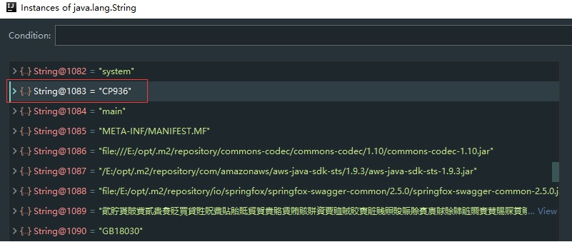

String常量池和String.intern
String常量池和String.intern
前言
字符串在实际中使用非常频繁，如果为每个字符串常量都生成一个String对象，明显会造成内存的浪费，针对这一问题，JVM实现一个字符串常量池的概念，提供了如下实现：
- 相同的字符串常量，在常量池只有一份副本；
- 通过双引号声明的字符串，直接保存在常量池中；
- 如果是String对象，可以通过String.intern方法，把字符串常量保存到常量池中；
提示：
Jave不仅有字符串常量池，Java中基本类型的包装类的大部分都实现了常量池技术，这些类是Byte,Short,Integer,Long,Character,Boolean,另外两种浮点数类型（Double 、Float）的包装类则没有实现。另外Byte,Short,Integer,Long,Character这5种整型的包装类也只是在对应值小于等于127时才可使用常量池，即JVM不负责创建和管理大于127的这些类的对象。
intern方法
举个例子：
1 | public static void testIntern() { |
jdk1.7的结果:
true
false
为什么不是:
true
true
原因
intern的实现
1 | /** |
从上面的代码（反编译jdk8）看出String.intern在java中是native方法，注释翻译如下：
执行intern方法时，如果常量池中存在和String对象相同的字符串，则返回常量池中对应字符串的引用；
如果常量池中不存在对应的字符串，则添加该字符串到常量池中，并返回字符串引用。
字符串常量池
如果是jdk6，上面的代码执行结果会是：false false。jdk7之前常量池的内存在永久代进行分配，永久代和Java堆的内存是物理隔离的，执行intern方法时，如果常量池不存在该字符串，虚拟机会在常量池中复制该字符，再返回并返回引用。jdk6的常量池没有上面例子的两个字符串，所以返回的都是false。
为什么jdk7返回ture和false呢？原因是jdk7把字符串常量池移到了堆中。
- 第一个字符串在常量池中不存在，就要字符串添加到常量池中，由于常量池在堆上，添加的时候只是加上该字符串的引用，没有拷贝的过程，然后再返回该字符串的引用，这样intern返回的引用和s1是同一个引用，所以打印出true；
- 第二个打印出false，只有一个原因，常量池中有那个字符串。调试时发现确实在字符串常量池中发现这该字符串，如下图：

字符串常量池大小
- 1、jdk6是1009
- 2、jdk7默认是60013，可以通过-XX:StringTableSize = 10009设置StringTable大小，
通过-XX:+PrintFlagsFinal打印虚拟机的Global flags参数，可以获得当前StringTable的大小。 - 3、jdk8移除了PermGen，常量池移动了堆上，大小受程序内存的限制。